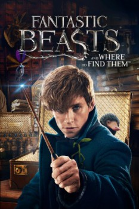

Country:United Kingdom, 133 minutes
Spoken languages:English
Genres:Fantasy, Adventure
Director(s):David Yates
Writer(s):J.K. Rowling
Video Codec:Unknown
Number: 1619

Certification:PG-13
Storyline:
In 1926, Newt Scamander arrives at the Magical Congress of the United States of America with a magically expanded briefcase, which houses a number of dangerous creatures and their habitats. When the creatures escape from the briefcase, it sends the American wizarding authorities after Newt, and threatens to strain even further the state of magical and non-magical relations.
Cast:
Eddie Redmayne (as Newt), Katherine Waterston (as Porpentina 'Tina' Goldstein), Dan Fogler (as Jacob Kowalski), Alison Sudol (as Queenie), Colin Farrell (as Graves)
Medium: Media file,
Location: D:\Fantastic Beasts\Fantastic Beasts and Where to Find Them.mp4
Loaned: No
Aspect ratio: Unknown